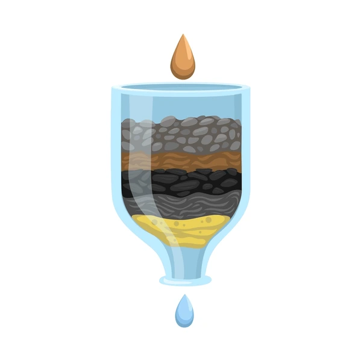

Objetivo general
Valorar las medidas para disminuir la falta de acceso al agua potable por medio de nuestro producto final (un filtro de agua usando carbón) para poder prevenir los diferentes tipos de enfermedades que se generan y sus consecuencias para finalmente tener acceso a esta.

Objetivos específicos
- Identificar las condiciones del agua potable que consumen las personas de las comunidades para poder prevenir las diferentes infecciones que se dan del consumo de agua no potable.
- Analizar los diferentes estudios realizados sobre el saneamiento del agua en el país, enfocándonos en cómo podemos ayudar a la población salvadoreña.
- Crear un filtro de agua de manera casera utilizando diferentes materiales,un ejemplo es el carbón, ayudándonos a disminuir el agua contaminada transformándola en agua potable para el bienestar de la población salvadoreña.